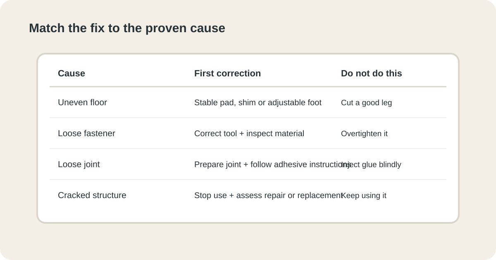

DIY BASICS · FURNITURE
A Simple Way to Fix Wobbly Furniture Without Guessing
A wobble is a symptom, not a diagnosis. Before tightening every screw or adding pads, find out whether the movement comes from the floor, a short contact point, a loose fastener or a joint that has started to fail.

1. Stop and describe the wobble
Do not start by tightening anything. First make the problem repeatable. Does the furniture rock from front to back, side to side, or only when pressure is applied to one corner? Does it wobble when empty, when loaded, or both?
A chair that rocks only when someone sits down has a different problem from a table that rocks on an empty floor. A cabinet that twists when a door opens may have a loose joint rather than a short leg. Write down what movement you can reproduce. That simple observation will guide the next test.
2. Separate the floor problem from the furniture problem
Move the piece to another reasonably flat part of the same room. Test it in the same orientation, then rotate it if practical. If the wobble changes or disappears, the floor is a strong suspect. If the wobble follows the furniture, inspect the furniture itself.
This is the most useful early test because it prevents you from permanently altering a sound leg to compensate for a dip in the floor. If several pieces of furniture wobble in the same area, investigate the surface before repairing each item separately.
3. Find the contact point that is not doing its job
Put the furniture on a stable surface and gently press each corner in turn. Watch the feet rather than the tabletop or seat. The corner that moves without immediately transferring pressure to the floor is the one to investigate.
For a chair or small table, you can slide a thin piece of card under each foot as a quick comparison. You are not measuring a precise engineering tolerance; you are trying to identify whether one contact point is obviously different from the others.


4. If the floor is uneven, fix the interface
When the furniture is sound but the floor is not perfectly level, use a stable correction between the furniture and the floor. A purpose-made furniture shim, felt pad or adjustable foot can work depending on the load and surface.
Do not stack loose scraps, folded paper or objects that can slide out. The correction should stay in position when the furniture is pushed, cleaned around or used normally. On a hard floor, use a material that will not scratch the finish. On carpet, check that the correction does not create an unstable point that sinks differently under load.
If the gap is large or the furniture carries significant weight, stop treating it as a tiny leveling problem. A structural or floor issue may need a more appropriate repair.
5. Check the legs for damage or movement
Inspect each leg where it meets the frame. Look for cracks, splits, loose screws, missing fasteners, movement at a joint or a leg that is visibly out of alignment.
Compare matching legs rather than judging one in isolation. A chair with four similar legs but one visibly shifted joint tells you something different from a table whose four feet are intact but one corner sits lower because of the floor.
Never sand, cut or shorten a leg just because it looks like the short one. First prove that the leg is actually the cause and that the floor is not creating the same symptom.
6. Tighten fasteners without creating a new problem
If a screw, bolt or connector is visibly loose, use the correct tool and tighten it until the joint is secure. Then stop. More force is not automatically a better repair.
Overtightening can strip threads, crush soft wood or pull a connector through weakened material. If a screw turns without becoming secure, that is evidence that the material or fastener may be damaged. Do not keep turning it in the hope that the problem will disappear.
After tightening, test the furniture again. If the wobble remains in exactly the same place, move on to the joint rather than repeatedly tightening the same fastener.
7. Treat a loose wooden joint as a joint problem
A wooden joint can remain loose even when its visible screw or connector is tight. Gently press the joined parts and watch whether they move relative to each other. A visible gap, creaking movement or rotation at the joint is a stronger clue than a loose screw alone.
If the construction allows safe disassembly, clean the mating surfaces and follow the adhesive manufacturer's instructions for the appropriate wood adhesive and clamping method. Do not simply inject fresh glue into a closed joint filled with old cured adhesive and assume it has bonded properly.
If the joint is part of a load-bearing chair, stool, bed or other heavily used item and the wood is cracked or split, replacement or professional repair may be safer than an improvised glue repair.
8. Know when a shim is enough and when it is not
A shim or pad is appropriate when the structure is sound and the problem is a small difference at the floor contact. It is not a substitute for a cracked leg, a failing joint or a fastener that no longer holds.
- Small floor gap: use a stable furniture shim, pad or adjustable foot suited to the surface.
- Loose fastener: use the correct tool and inspect the material if it will not tighten normally.
- Moving joint: repair the joint rather than hiding the movement under a foot.
- Cracked structural part: stop using the furniture until the damage is properly assessed.
9. Re-test under the real load
A repair is not finished because the empty furniture looks level. Put it back into the situation that caused the complaint and test it carefully.
- Place the furniture on the intended surface.
- Check every contact point again.
- Apply gentle pressure from several directions.
- For a chair or table, test the normal load gradually rather than dropping weight onto it.
- Listen for new creaks and watch for any joint opening.
- Stop if the movement is worse, not better.
If the furniture is stable after repeated normal use, leave the correction in place and avoid unnecessary further adjustments.
10. Avoid the fixes that only hide the symptom
Several quick fixes feel satisfying but can make the real problem harder to diagnose. Stacking random materials under a leg can shift during use. Adding glue around an inaccessible joint can create a messy surface without restoring the bond. Tightening every fastener can damage good connections while leaving the failed one untouched.
The better rule is simple: make one change that matches one proven cause, then test. If the wobble disappears, you know why. If it does not, undo the change where practical and continue the diagnosis.
11. Safety matters more for some furniture than others
A small decorative side table and a tall loaded bookcase do not have the same consequences if they move. Treat chairs, stools, beds, shelves and tall storage as higher-consequence items because people can be injured if a structural component fails.
For tall furniture, use appropriate anti-tip measures and follow the manufacturer's installation instructions. The U.S. Consumer Product Safety Commission provides guidance on furniture tip-over prevention. If you find a cracked load-bearing component, severe material damage or a joint that cannot be secured reliably, stop using the furniture rather than experimenting with increasingly strong fixes.
12. What to check before you buy anything
You usually need fewer supplies than you expect. First identify the cause, then choose the correction.
- For a small floor gap: a properly sized furniture pad or purpose-made shim.
- For adjustable furniture: a compatible replacement glide or foot rather than improvised layers.
- For a loose fastener: the correct screwdriver, hex key or wrench for the existing hardware.
- For a repairable wooden joint: suitable wood adhesive and a safe way to clamp the joint while it cures, following the adhesive label.
- For diagnosis: a small level, tape measure and a few thin cards are often enough to compare contact points.
Do not buy a replacement leg, a large set of organizers or a new piece of furniture until you can explain exactly what the current piece is doing wrong.
Common mistakes to avoid
- Shortening a leg before proving that the floor is not the cause.
- Using random objects as permanent shims.
- Overtightening fasteners into soft or damaged material.
- Adding glue without preparing the joint.
- Testing only when the furniture is empty.
- Continuing to use furniture with a cracked structural component.
Related guides for small home repairs
Once the furniture is stable, keep the rest of the home project just as methodical: find and fix a drafty door, reduce cable clutter without creating another mess, or use a simple home reset to catch small maintenance problems before they pile up. If the repair is part of an entryway project, see quiet entryway storage. For a broader weekend-project approach, browse all HomeProjectWise guides.
Frequently Asked Questions
How do I know if the floor is the problem?
Move the furniture to another reasonably flat area and test it again. If the wobble changes or disappears, the floor is a strong suspect.
Can I fix a slightly short leg without replacing it?
Often yes, when the structure is sound. A properly fitted furniture pad, shim or adjustable foot can correct a small difference at the floor contact.
Why does tightening the screws sometimes not work?
The movement may be coming from the floor, a damaged fastener, worn material or a loose joint rather than the screw itself.
Should I use several shims to level a chair?
Usually no. A stack of loose materials can move during use. Recheck the cause and use a purpose-made correction that stays stable.
How can I tell whether a wooden joint is actually loose?
Watch the joint while applying gentle pressure. If the joined parts move relative to each other or a gap opens, the joint itself needs attention.
When should I stop and get help?
Stop using the furniture when a load-bearing part is cracked, split, badly damaged or cannot be secured reliably. Higher-risk furniture deserves a conservative approach.
Fix the cause, not the symptom. A stable piece of furniture usually comes from a short diagnosis followed by one appropriate correction. If you cannot identify a safe cause, do not keep experimenting.